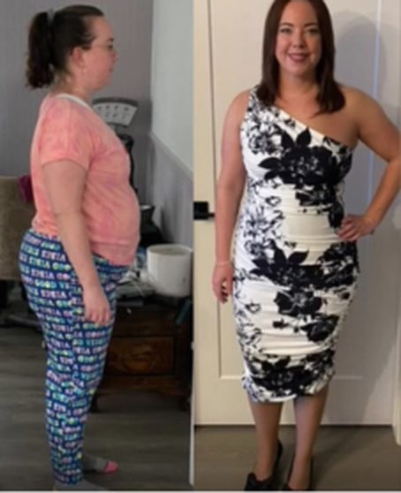
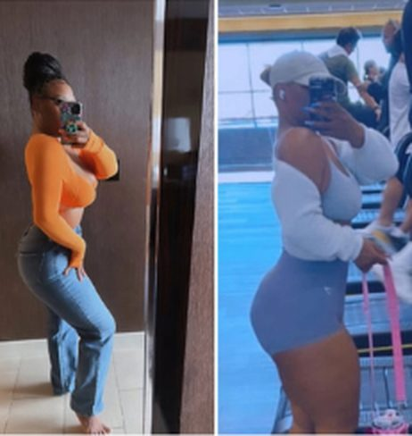
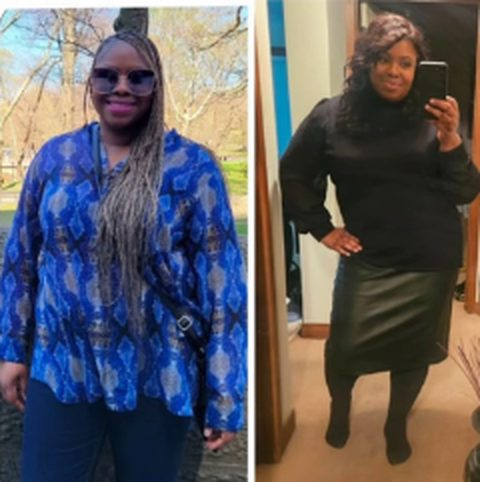

Leah
I was 202. I'm down to 160. I thought I wanted 150 but I'm good at 160. I used to wear a size 14 now I wear size 6
202 → 160
pounds (her words)
14 → 6
dress size (her words)
“Thank you sooo much!!!”
No gym. Walk, eat twice a day, keep the foods you love. Here is what real women told me, in their own words.
Want this? DM me READYReal words from real followers. Your results will be your own.
I was 202. I'm down to 160. I thought I wanted 150 but I'm good at 160. I used to wear a size 14 now I wear size 6
“Thank you sooo much!!!”
“Best feeling in the world is returning back to work after the holidays and receiving compliments around how much smaller I look.”
— a followerWomen who did it. Their words under each photo.



Comments and messages from women who followed my free videos.
Thank you SO MUCH for the daily reminders. I really need them … Since 3/19/24 I am down 50 lbs AND 5 pant & blouse sizes
I lost 20 pounds following you so far. I'm ready for the next 80.
This works! I went from 230 to 185
This definitely works. I started fasting last February for breakfast and lost 50lbs by end of May.
I am 72 years old. Followed your advice and lost 20 lbs. Walked 10,000 steps a day.
your simple and easy advice changed my diet forever! Ive lost almost 30 pounds!
I walk 10000 steps per day and lose 40lbs so far. I feel amazing.
I started at size 18 and I am down to size 10.
I went from 266 to 252 using your method
I have 150 lbs to loose. Following your plan I have already lost 16 pounds.
I have been eating twice a day recently with moderate exercise and I have lost over 20 pounds.
I did exactly what you're saying along with walking . I lost 20lbs easily in about 8mths.
The simplicity of your videos is so empowering. I've incorporated a lot of your tips and I'm down 11lbs in 2 1/2 weeks
I was at 167lbs, now I'm down to 156.8lbs … The journey continues
This actually works. FINALLY, something is working. I have lost 5 pounds this week already. … I am not hungry either.
Im following this advice I'm losing pounds every week and today I ate cookout with no guilt
I'm down 15kg following your advice
I am down 13 pounds since we first started really talking in October
When I met with you, I was 259 and now at 255. … I'm also down one dress size.
I've lost 15 so far following your strategy IT WORKS!!!
So I used your math for cutting and I have lost 12-15 pounds
i wasnt able to lose weight until i started listening to you and your instructions on weight loss. … You keep it simple and because of that cause of you i lost 3 pounds.
Im down 11kg thanks to your guidance
Thank you for your influence I met my goal today 140
i was soo lost a week ago.. i came across your page.. took your advice.. and im already down 6.2 lbs.. thank you!!
Thank you for your amazing, simplified content. It's super helpful! … today is day 5 and I've already dropped 4 lbs!
I have lost 5 lbs following you content for 2 weeks! I live your plans very practical.
5 days in and i am down 6.4 lbs it's working !!!!
I lost 8 pounds already doing this !
I have lost 5kgs following your teaching.
I follow your diet plan and I lose 3 kg in 1 week
I lost 5 lbs this week following your plan
I can tell you that this works, I've been doing this for 2 weeks and already lost 3 kilos
I been following you I lost 10 lbs I love your motivation
Thanks I went from 55 kg to 52 in 10 days with your advices
I just lost 10 pounds. I'm so excited he's helped so much.
I tried this and lost 10 pounds last month
I have been following your advice now for only a week and have already seen changes.
DM me the word READY on Instagram.
DM READY to @gromikooReal words from real followers. Your results will be your own.